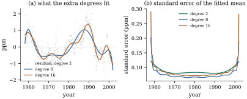
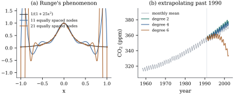

42.1 Polynomial regression and its instability
The simplest way to let a regression curve bend is to add powers of the regressor as columns. Nothing in Parts II and III changes, because nothing there ever asked what the columns were.
Let
42.1.1. Everything from Parts II and III applies
Write
Warning. What does not
carry over is the reading of a coefficient: there is no
way to change
42.1.2. What the degree buys
Raising the degree adds a column, so bias falls and variance rises: the trade-off of Example (Choosing a polynomial degree). The useful question is how the two move in practice.
The monthly mean carbon dioxide at Mauna Loa, March
1958 to December 2001, gives
The improvement is real: panel (a) of Figure 42.1.1 shows the
residuals of the quadratic fit wandering by a part per
million over decades, and the higher-degree trends
tracking that wandering. The price is in panel (b). In
the middle of the range the standard error of the fitted
mean is much the same at all three degrees —

import numpy as np
import statsmodels.api as sm
co2 = sm.datasets.co2.load_pandas().data["co2"]
monthly = co2.resample("MS").mean().dropna() # weekly values -> monthly means
y = monthly.to_numpy()
t = (monthly.index.year + (monthly.index.month - 0.5) / 12).to_numpy()
n = len(y)
def harmonics(s):
"""The seasonal columns of Example 5.3, held fixed throughout the chapter."""
return np.column_stack([np.cos(2 * np.pi * s), np.sin(2 * np.pi * s),
np.cos(4 * np.pi * s), np.sin(4 * np.pi * s)])
lo, hi = t.min(), t.max()
u = lambda s: 2 * (s - lo) / (hi - lo) - 1 # time rescaled to [-1, 1]
print(f"n = {n}, time from {lo:.2f} to {hi:.2f}")def trend_design(s, d):
"""Model matrix: powers 1, u, ..., u^d of rescaled time, then the four harmonics."""
return np.column_stack([np.vander(u(s), d + 1, increasing=True), harmonics(s)])
for d in (2, 8, 16):
X = trend_design(t, d)
beta, *_ = np.linalg.lstsq(X, y, rcond=None)
resid = y - X @ beta
p = X.shape[1]
lev = np.einsum("ij,ij->i", X @ np.linalg.pinv(X.T @ X), X) # leverages h_ii
print(f"degree {d:2d}: p = {p:2d} sigma_hat = {np.sqrt(resid @ resid / (n - p)):.4f}"
f" mean h = {lev.mean():.4f} max h = {lev.max():.4f}")42.1.3. Four ways a polynomial misbehaves
The pattern in Example (Degree in the carbon dioxide series) is not particular to that series: it is the visible part of four properties of the monomial basis and of the polynomial class itself.
Let
(a) (Conditioning.) If the design points are a sample from a distribution on
(b) (Oscillation.) Interpolation by a polynomial of degree
(c) (Extrapolation.) Let
(d) (Non-locality.) Changing one response
Proof.
(a) The
(b) This is Runge’s phenomenon, stated here without proof: Runge (1901) gave the example and Trefethen (2019) the modern account, Chebyshev nodes included. Nothing later depends on the divergence itself, only on the weaker statement that a polynomial forced to follow the data in one region must do something in the others, and that something is an oscillation largest at the ends.
(c) With
(d) Least squares is linear in
Part (a) explains the numbers in Example (Polynomial regression),
and part (b) is drawn in panel (a) of Figure 42.1.2. Part (d) is why
a polynomial fit is never local: moving the December
2001 carbon dioxide value by
Interpolate
Trouble at the ends is a shortage of design points relative to what the fitted function is asked to do there. Either add points, rarely an option, or ask the function to do less — which is what knots and penalties do.
Fit the same models to the

import numpy as np
runge = lambda x: 1.0 / (1.0 + 25.0 * x ** 2)
grid = np.linspace(-1.0, 1.0, 2001)
for m in (5, 11, 21, 31):
equal = np.linspace(-1.0, 1.0, m) # m equally spaced nodes
cheb = np.cos((2 * np.arange(m) + 1) * np.pi / (2 * m)) # m Chebyshev nodes
err = [np.max(np.abs(np.polyval(np.polyfit(z, runge(z), m - 1), grid) - runge(grid)))
for z in (equal, cheb)]
print(f"{m:2d} nodes, degree {m - 1:2d}: equally spaced {err[0]:10.4f} Chebyshev {err[1]:8.5f}")42.1.4. Centring and scaling are a partial repair
Part (a) of Proposition 42.1.1
is about the basis, and a basis can be changed
without touching the model. The cheapest change is
affine: fit in
| Degree | raw years | centred | rescaled to |
|---|---|---|---|
| 2 | |||
| 4 | |||
| 8 | |||
| 12 | |||
| 16 |
Centring gains nine orders of magnitude at degree 2
and forty-six at degree 16, because raising a number
near 1980 to the sixteenth power is what made the
columns incommensurable; rescaling gains a further two
to sixteen, close to the best any diagonal rescaling can
do (Proposition 10.5.2).
But the rescaled design is still at
for d in (2, 4, 8, 12, 16):
raw = np.linalg.cond(np.vander(t, d + 1, increasing=True))
centred = np.linalg.cond(np.vander(t - 1980.0, d + 1, increasing=True))
scaled = np.linalg.cond(np.vander(u(t), d + 1, increasing=True))
print(f"degree {d:2d}: raw {raw:.2e} centred {centred:.2e} scaled {scaled:.2e}")Two complaints have now been separated. The basis
is bad is a numerical statement, fixed exactly by a
change of basis that no fitted value feels: Section 42.2.
The family is bad is a statement about
42.1.5. Exercises
A. Check your understanding
Show that
Solution. If
B. Practice
For the design
For the design
Let
Solution. Expanding
Verify part (d) of Proposition 42.1.1
numerically: for the degree-12 trend on the carbon
dioxide design compute
Solution. The counts are
C. Going deeper
The Weierstrass approximation theorem says that every
continuous
For interpolation at nodes